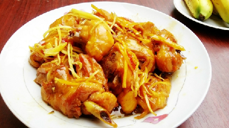

Gà kho gừng

- Khẩu phần 4
- Chuẩn bị 15 phút
- Thực hiện 10 phút
Nguyên liệu
- 300gr thịt gà
- 1 trái ớt sừng lớn
- 20gr gừng
- 1 gói Gia Vị Hoàn Chỉnh - Thịt kho
- 1 muỗng canh nước mắm
- 2/3 chén nước
Hướng dẫn thực hiện
- Dùng cốt và chày để giã nhuyễn ớt và gừng
- Sau đó ướp 300gr thịt gà với Gia Vị Hoàn Chỉnh - Thịt kho và nước
mắm trong khoảng 15 phút.
- Đun nóng dầu ăn, cho thịt gà vào nồi xào khoảng 5 phút cho thịt săn lại.
- Thêm 2/3 chén nước, đun sôi, giảm nhỏ lửa, kho tiếp khoảng 10 phút hoặc
đến khi nước xốt sệt lại.
- Trang trí với tiêu xay. Dùng nóng với cơm trắng.